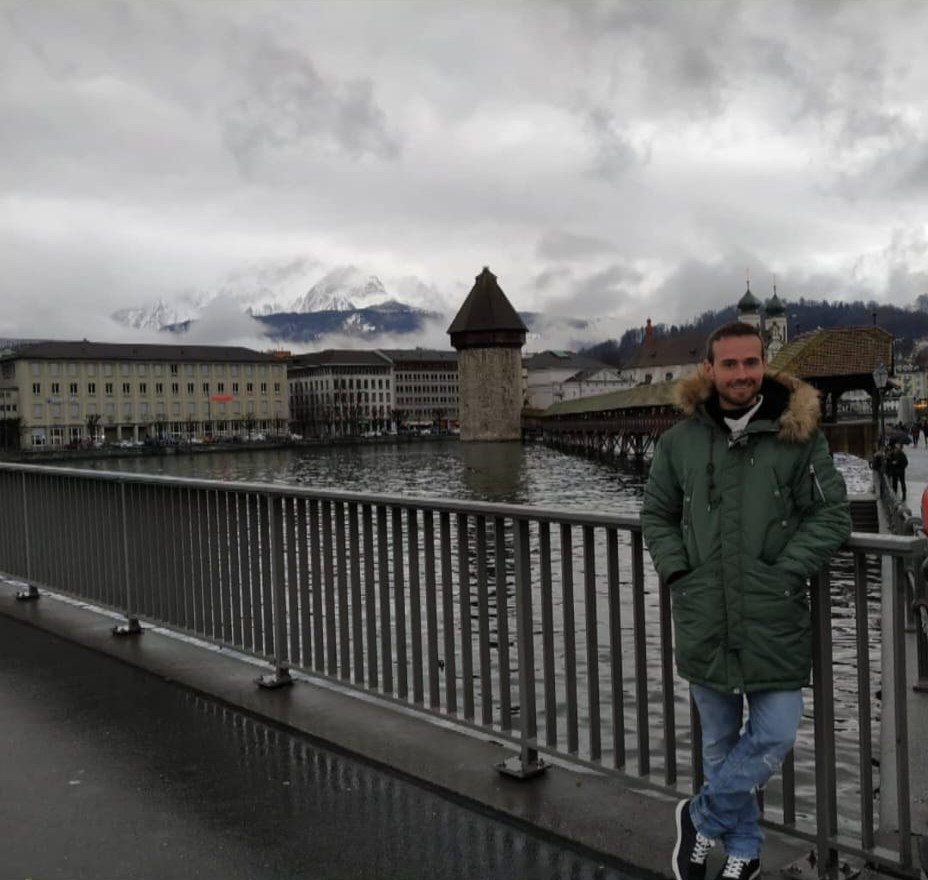
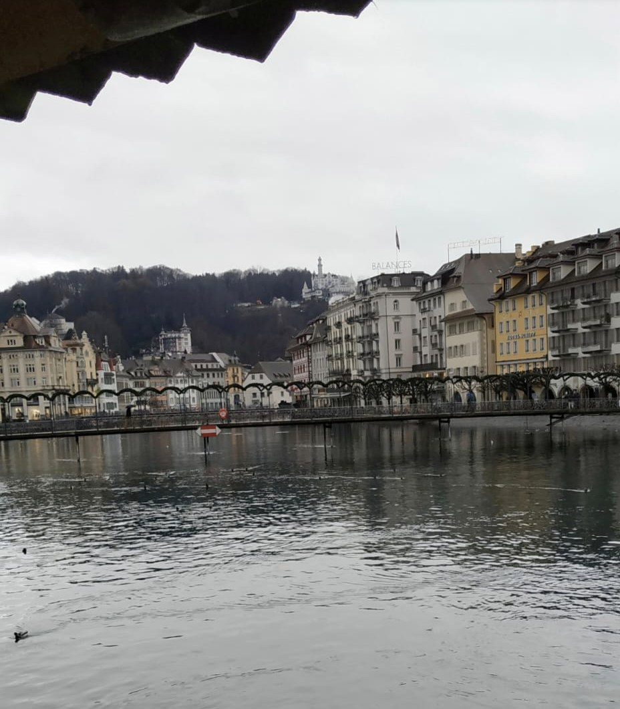
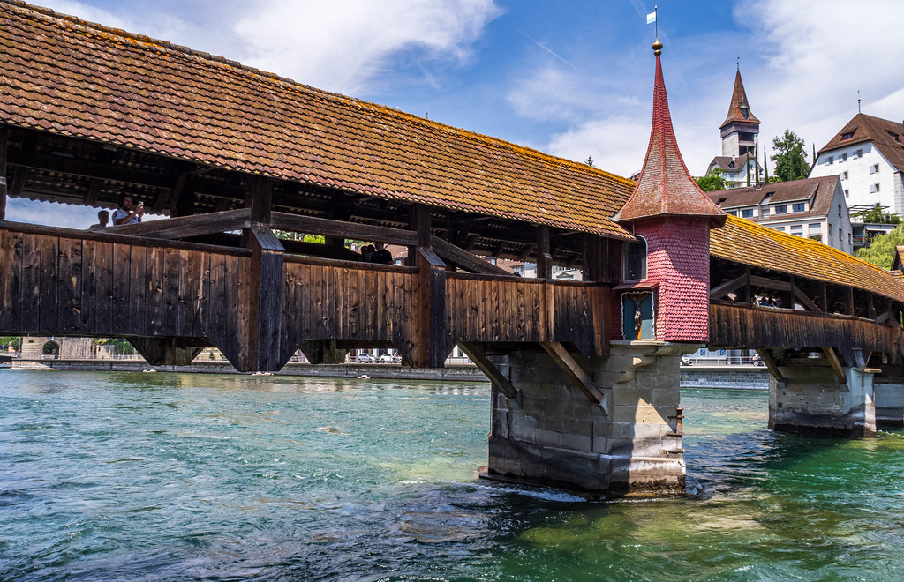
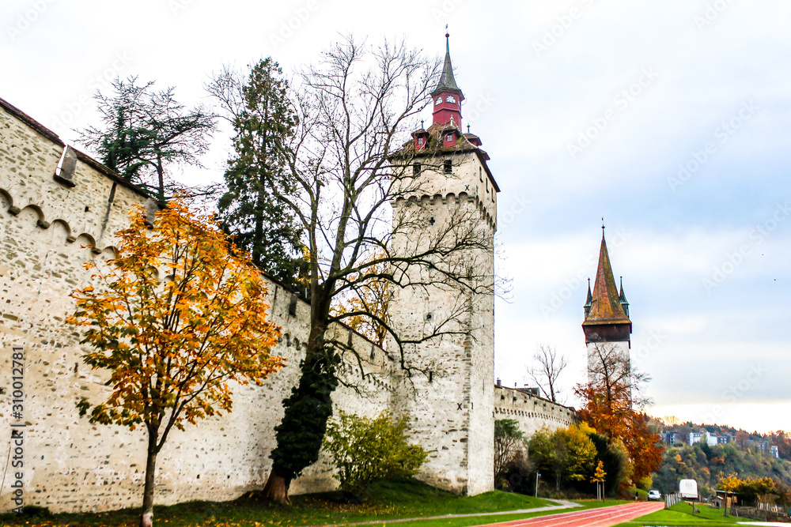
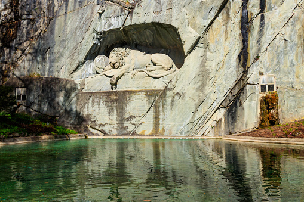
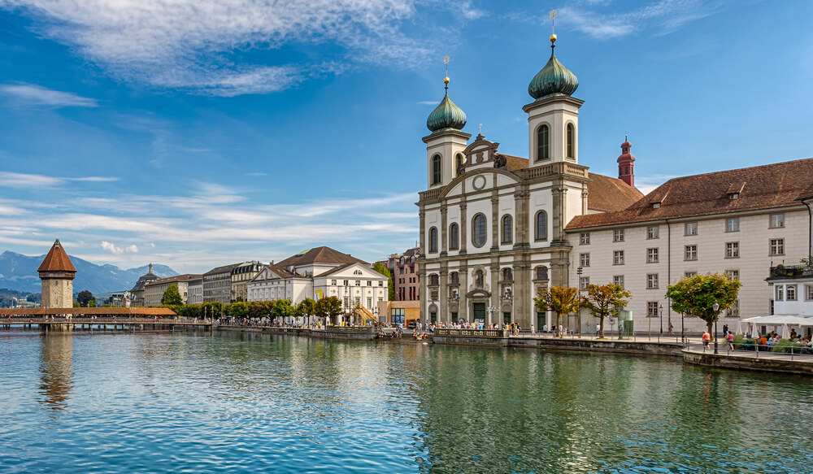
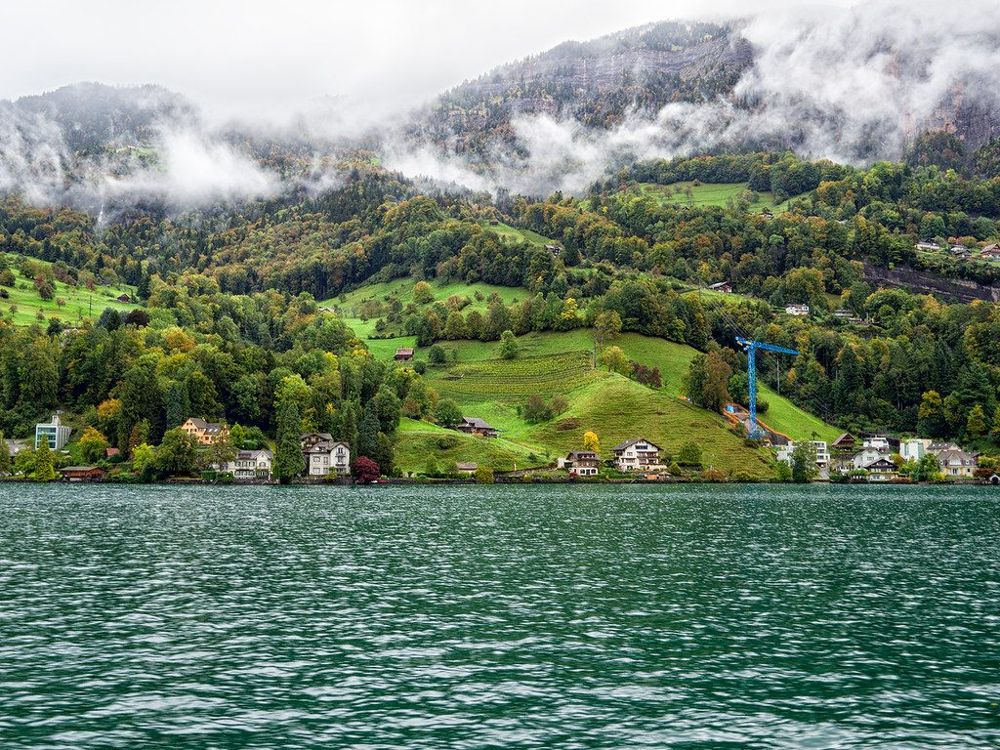
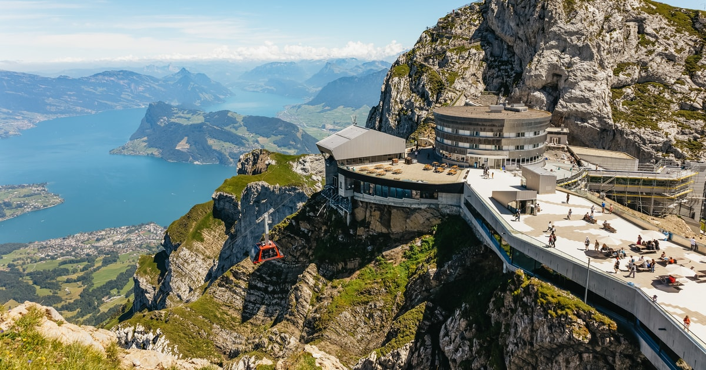
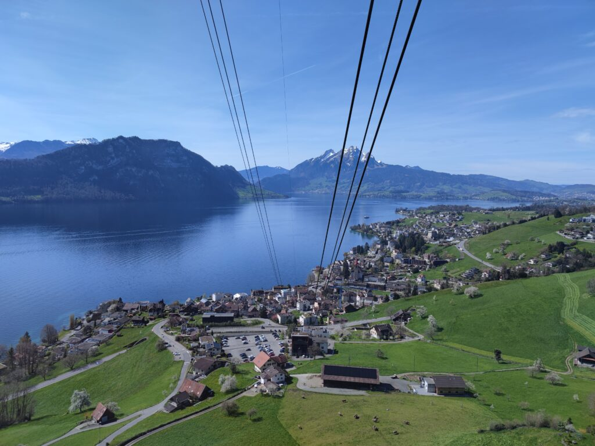
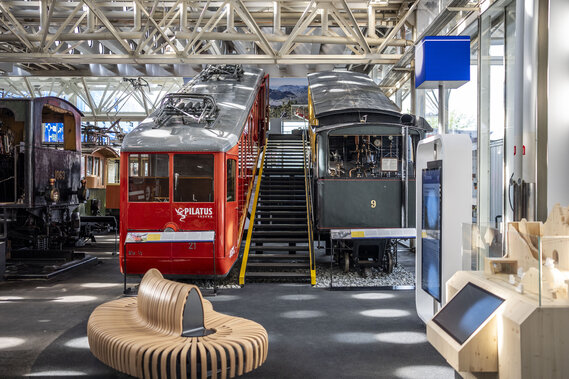

Puentes de madera, un lago de postal y las montañas más bonitas de Suiza
Lucerna (Luzern en alemán) es una de las ciudades más bonitas de Suiza. Situada a orillas del Lago de los Cuatro Cantones y rodeada por los Alpes, combina un casco antiguo medieval de fachadas pintadas, puentes de madera cubiertos y unas vistas espectaculares de los montes Pilatus y Rigi.
Es un destino perfecto para una escapada de fin de semana: la ciudad es pequeña y se recorre a pie, y desde ella salen barcos, trenes de cremallera y teleféricos hacia algunas de las montañas más famosas del país. Está a solo una hora en tren del aeropuerto de Zúrich, así que es muy fácil llegar desde España.
---Para un fin de semana, mi recomendación es alojarse en el casco antiguo o cerca de la estación. Lo tienes todo a pie y los barcos y trenes hacia las montañas salen de allí mismo.
🎫 Visitor Card Lucerne: Si te alojas en un hotel de Lucerna, pide la tarjeta de visitante. Normalmente incluye el transporte público por la ciudad y descuentos en museos y excursiones.
💰 Suiza es cara: Reserva con antelación y compara precios. Los apartamentos y los hoteles con cocina pueden ayudarte a ahorrar bastante.

El Puente de la Capilla es el símbolo de Lucerna. Construido en el siglo XIV, es uno de los puentes de madera cubiertos más antiguos de Europa. Cruza el río Reuss en diagonal y está decorado con flores en sus barandillas.
En su interior se conservan unas pinturas triangulares del siglo XVII que cuentan la historia de la ciudad. En 1993 un incendio destruyó gran parte del puente y muchas de las pinturas, pero fue reconstruido. A su lado se levanta la Torre del Agua (Wasserturm), una torre octogonal de piedra que se usó como prisión, archivo y tesoro.

El casco antiguo de Lucerna es un conjunto de calles peatonales y plazas rodeadas de edificios con fachadas pintadas con escenas históricas. Las plazas más bonitas son la Weinmarkt (Plaza del Mercado del Vino), la Kornmarkt y la Hirschenplatz.
Junto al río está el Ayuntamiento antiguo, con arcadas donde los sábados por la mañana se monta el mercado. Es un lugar perfecto para pasear sin rumbo, tomar un café en una terraza y descubrir rincones.

El otro puente de madera cubierto de Lucerna, más pequeño y mucho menos turístico que el de la Capilla. Fue construido a principios del siglo XV y se conserva en su estado original, junto a un antiguo molino.
Lo más curioso son sus pinturas del siglo XVII, que forman la Danza de la Muerte: escenas en las que la muerte aparece junto a personas de todas las clases sociales, recordando que nadie se libra de ella.

La Muralla Musegg es la antigua muralla medieval de la ciudad. Tiene unos 870 metros de largo y nueve torres, y es una de las murallas mejor conservadas de Suiza.
Se puede caminar por parte de ella y subir a varias de sus torres, desde donde hay unas vistas preciosas de los tejados de Lucerna, el lago y los Alpes. En la torre Zyt está el reloj más antiguo de la ciudad, que tiene el privilegio de dar las horas un minuto antes que todos los demás.

El León moribundo es un enorme león esculpido directamente en una pared de roca junto a un pequeño estanque. Recuerda a los guardias suizos que murieron en 1792 defendiendo el Palacio de las Tullerías de París durante la Revolución Francesa.
El escritor Mark Twain lo describió como "el trozo de piedra más triste y conmovedor del mundo". Es un lugar tranquilo y emocionante que merece una visita de unos minutos.

Situada a orillas del río Reuss, la Iglesia de los Jesuitas fue la primera gran iglesia barroca construida en Suiza, en el siglo XVII. Su fachada blanca con dos torres de cúpulas en forma de cebolla es una de las imágenes típicas de Lucerna.
El interior es espectacular: blanco y luminoso, con estucos, frescos en el techo y decoración en tonos rosados y dorados. Es un contraste precioso con la sencillez de la fachada.

El Lago de los Cuatro Cantones (Vierwaldstättersee) es uno de los lagos más bonitos de Suiza. Sus aguas de color verde azulado están rodeadas de montañas, prados y pequeños pueblos, y recorrerlo en barco es una de las mejores experiencias de la zona.
Hay cruceros panorámicos de 1 hora y trayectos más largos hasta los pueblos del lago. Algunos de los barcos son antiguos vapores de ruedas restaurados, que hacen el paseo todavía más especial. También puedes simplemente pasear por el paseo junto al lago hasta el KKL, el moderno centro de congresos y conciertos de Jean Nouvel.

El Pilatus es la montaña de Lucerna, con más de 2.100 metros de altura. La excursión más famosa es el Golden Round Trip: barco por el lago hasta Alpnachstad, subida en el tren cremallera más empinado del mundo (con pendientes de hasta el 48%) y bajada en teleférico y telecabina hasta Kriens, desde donde vuelves en autobús.
Arriba hay miradores, senderos cortos y hasta un hotel. En días claros se ven decenas de cumbres de los Alpes, el lago y la ciudad de Lucerna a tus pies.

El Rigi es conocido como la "Reina de las Montañas". Su tren de cremallera, que sale de Vitznau, fue el primer tren de montaña de Europa (1871). Desde la cima (casi 1.800 metros) hay unas vistas espectaculares del lago y de los Alpes.
Es una montaña más suave y verde que el Pilatus, ideal para hacer senderismo entre prados con vacas. Una opción muy bonita es llegar en barco a Vitznau, subir en tren, bajar caminando un tramo y volver por otro lado (por ejemplo, en teleférico a Weggis).

El Museo del Transporte es el museo más visitado de Suiza. Recorre la historia del transporte por tierra, mar, aire y espacio con locomotoras, barcos, aviones, coches y simuladores.
Además del museo, tiene un planetario, una sala de cine de gran formato y una exposición sobre el chocolate suizo. Es una visita perfecta para un día de lluvia o si viajas con niños.
En un fin de semana puedes ver Lucerna sin prisas: dedica un día a la ciudad (puentes, casco antiguo, muralla y León) y otro día a una montaña (Pilatus o Rigi) combinándola con un paseo en barco por el lago.
Si tienes un día más, una excursión muy popular es el Monte Titlis, en Engelberg (aprox. 1 hora en tren). Tiene nieve todo el año, un teleférico giratorio y un puente colgante a más de 3.000 metros.
El tiempo en la montaña cambia muy rápido. Mira las webcams de las cumbres antes de subir: si están cubiertas de nubes, mejor cambiar el plan y dejar la montaña para otro día.